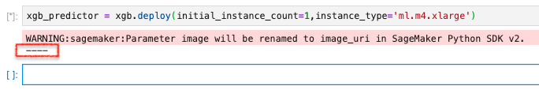
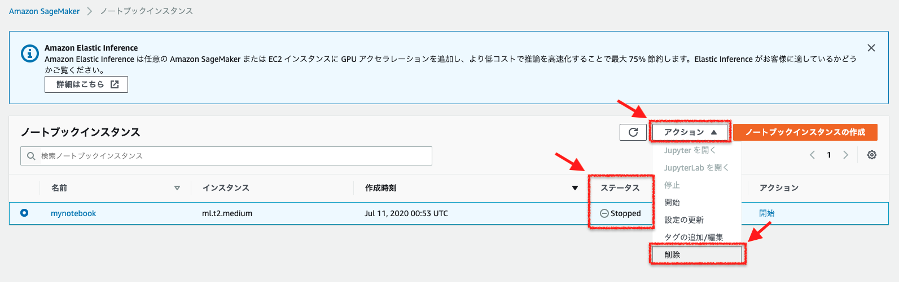

[第8回] Amazon SageMaker の基本的な使い方を理解する (4)¶
はじめに¶
今回の記事で実施すること¶
今回は下記の表の「ステップ 5: モデルのデプロイ」、「ステップ 6: モデルの性能評価」、「ステップ 7: モデルの性能評価」を扱います。
工程 |
ステップ |
枝番 |
実施内容 |
連載回 |
|---|---|---|---|---|
開発 |
1 |
Amazon SageMaker コンソールにログインする |
第 5 回 |
|
2 |
Amazon SageMaker notebook instance を作成する |
第 5 回 |
||
3 |
データの準備 |
第 6 回 |
||
3a, 3b |
ノートブックを起動する |
|||
3c |
ノートブックの利用準備をする |
|||
3d |
S3 バケットを作成する |
|||
3e |
学習・推論に利用するデータをダウンロードする |
|||
3f |
データを分割する |
|||
学習 |
4 |
データからのモデルのトレーニング |
第 7 回 |
|
4a |
学習データを S3 バケットにアップロードする |
|||
4b |
学習の設定をする |
|||
4c |
学習を行う |
|||
推論 |
5 |
モデルのデプロイ |
第 8 回 |
|
5a |
推論エンドポイントを作成して、モデルをデプロイする |
|||
5b |
推論を行う |
|||
6 |
モデルの性能評価 |
第 8 回 |
||
後片付け |
7 |
リソースを終了する |
第 8 回 |
ステップ 5: モデルのデプロイ¶
学習を実行し、機械学習モデルの構築まで完了しました。ここでは、機械学習モデルをデプロイします。
ステップ 5a: 推論エンドポイントを作成して、モデルをデプロイする¶
推論用インスタンスの作成
S3 バケットからの機械学習モデルのダウンロード
推論用コンテナの起動
API の公開
実行するコード¶
下記のコードをセルにコピー＆ペーストして実行してください。
xgb_predictor = xgb.deploy(initial_instance_count=1,instance_type='ml.m4.xlarge')
なお、デプロイが開始されると、下記の画像に示したように処理の進行とともに「- (ハイフン)」が出力されていきます。
{kind=link}
デプロイが完了すると、下記のように完了を示す「!」が出力されます。 デプロイ処理は数分で完了します。
{kind=link}
コードの解説¶
xgb_predictor = xgb.deploy(
initial_instance_count=1,
instance_type='ml.m4.xlarge'
)
パラメータ (引数) |
パラメータの意味 |
|---|---|
initial_instance_count |
推論用インスタンス数を設定する。
|
instance_type |
推論用インスタンスのインスタンスタイプを設定する。
ML インスタンスとして様々なタイプが用意されており、学習の特性に応じたものを選択する。
ここでは、汎用 (M4) の xlarge を設定している。その他に利用できるインスタンスタイプと料金は下記を参照のこと。
|
ステップ 5b: 推論を行う¶
実行するコード¶
下記のコードをセルにコピー＆ペーストして実行してください。
test_data_array = test_data.drop(['y_no', 'y_yes'], axis=1).values #load the data into an array
xgb_predictor.content_type = 'text/csv' # set the data type for an inference
xgb_predictor.serializer = csv_serializer # set the serializer type
predictions = xgb_predictor.predict(test_data_array).decode('utf-8') # predict!
predictions_array = np.fromstring(predictions[1:], sep=',') # and turn the prediction into an array
print(predictions_array.shape)
実行した結果出力される (12357,) は、予測した顧客の数 (12,357人) です。
コードの解説¶
test_data_array = test_data.drop(['y_no', 'y_yes'], axis=1).values #load the data into an array
xgb_predictor.content_type = 'text/csv' # set the data type for an inference
xgb_predictor.serializer = csv_serializer # set the serializer type
推論に用いるテストデータの Content type とシリアライザのタイプに CSV 用のものを指定しています。
predictions = xgb_predictor.predict(test_data_array).decode('utf-8') # predict!
テストデータを推論エンドポイントに送信して、推論結果を得ています。
predictions_array = np.fromstring(predictions[1:], sep=',') # and turn the prediction into an array
推論結果がカンマ区切りのテキストデータで返されるので、後続の精度の評価をするために Numpy の fromstring メソッドを使って Array に変換しています。
ステップ 6: モデルの性能評価¶
実行するコード¶
下記のコードをセルにコピー＆ペーストして実行してください。
cm = pd.crosstab(index=test_data['y_yes'], columns=np.round(predictions_array), rownames=['Observed'], colnames=['Predicted'])
tn = cm.iloc[0,0]; fn = cm.iloc[1,0]; tp = cm.iloc[1,1]; fp = cm.iloc[0,1]; p = (tp+tn)/(tp+tn+fp+fn)*100
print("\n{0:<20}{1:<4.1f}%\n".format("Overall Classification Rate: ", p))
print("{0:<15}{1:<15}{2:>8}".format("Predicted", "No Purchase", "Purchase"))
print("Observed")
print("{0:<15}{1:<2.0f}% ({2:<}){3:>6.0f}% ({4:<})".format("No Purchase", tn/(tn+fn)*100,tn, fp/(tp+fp)*100, fp))
print("{0:<16}{1:<1.0f}% ({2:<}){3:>7.0f}% ({4:<}) \n".format("Purchase", fn/(tn+fn)*100,fn, tp/(tp+fp)*100, tp))
コードの解説¶
Pandas の crosstab 関数を使って、推論結果のクロス集計を行っています。
ここで、精度評価で利用している混同行列について補足します。

True Positive (TP): 預金証書 (CD) を申し込むと予測して、実際に申し込んだ顧客の数
False Poritive (FP): 預金証書 (CD) を申し込むと予測したが、実際には申し込まなかった顧客の数
True Negative (TN): 預金証書 (CD) を申し込まないと予測して実際に申し込まなかった顧客の数
False Negative (FN): 預金証書 (CD) を申し込まないと予測したが、実際には申し込んだ顧客の数
推論結果についての考察¶
上記のコードを実行すると、下記のような出力結果を得られます。
{kind=link}

ステップ 7: リソースを終了する¶
(メモ) 任意で実施。課金が気になる場合は必ず実施する。
(メモ) 課金されるリソース・課金されないリソースを書いておく。
実行するコード¶
下記のコードをセルにコピー＆ペーストして実行してください。
sagemaker.Session().delete_endpoint(xgb_predictor.endpoint)
bucket_to_delete = boto3.resource('s3').Bucket(bucket_name)
bucket_to_delete.objects.all().delete()
その他のリソースの削除¶
この他にも「ノートブックインスタンス」と「CloudWatch Logs」が課金対象となりますので、削除忘れに注意してください。 ノートブックインスタンスは「停止」と「削除」の 2 段階での対応が必要です。
{kind=link}
「ステータス」が「Stopped」になったことを確認して、「アクション」で「削除」をクリックします。
{kind=link}
ノートブックインスタンスの削除を確認するウィンドウが表示されますので、「削除」をクリックします。


CloudWatch の画面に移動できたら、左側のメニューから「ロググループ」を選択します。
{kind=link}
{kind=link}
ロググループの削除を確認するウィンドウが表示されますので、「削除」をクリックします。

ロググループが画面からなくなったら削除は完了です。
考察¶
(メモ) ここまででかなりの長さになることが予想されるので、連載を分けた方が良いかも。
(メモ) 自分のビジネス課題に応用するにはどうすれば良いのか？
(メモ) XGBoost の詳細を知る必要があるか？ (下記あたりを抑えておけば良いのでは？)
どんな課題に適用できるか？
どんなデータを準備すれば良いか？
どうやって利用するか？
まとめ¶
参考文献¶
著者紹介¶

菊地 貴彰 (KIKUCHI Takaaki)
株式会社 NTT データ システム技術本部 デジタル技術部 Agile プロフェッショナル担当
大学・大学院では、機械学習を専攻。 ベイズ的枠組みを用いて、複数の遺伝子のデータから遺伝子どうしの相互作用ネットワークの推定に関する研究を行った。
株式会社NTTデータに入社後は、法人や金融のシステム開発のシステム基盤担当としてキャリアを積み、 現在はデジタル技術や Agile 開発を専門に扱う組織でシステム開発全般を担当する。 2019, 2020 APN AWS Top Engineers, Japan APN Ambassador 2020 に選出。
本連載の内容に対するご意見・ご質問は twitter: @kikuchitk7 まで。